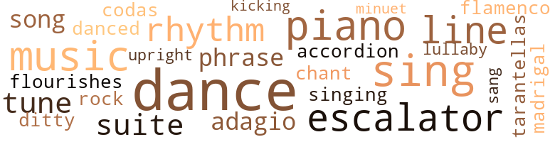
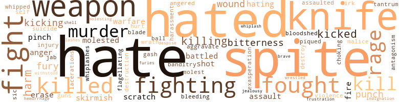

74 music-related terms matched in this text.
Most frequent terms in this topic: dance (11); sing (7); piano (6); music (6); escalator (5)

accordion.n.01
Definition: a portable box-shaped free-reed instrument; the reeds are made to vibrate by air from the bellows controlled by the player
| word |
sentence |
| accordion |
He sat on the piano keys , creating a muffled and discordant cluster of sound akin to a squeezed accordion . |
adagio.n.01
Definition: (music) a composition played in adagio tempo (slowly and gracefully)
| word |
sentence |
| adagio |
The expert pianism , adagio non troppo , did not in the least soothe our nerves , or help us decide what we must do with the sinister information we 'd just gathered there in the shade . |
| adagio |
As I stirred the gin and vermouth , he mumbled something about adagio maestoso } or something of that ilk , and began conducting an imaginary orchestra with his free hand . |
chant.n.01
Definition: a repetitive song in which as many syllables as necessary are assigned to a single tone
| word |
sentence |
| chant |
It was a sneeze in five parts - a rasping mucous cough , sounding very much as I imagine a voodoo chant must sound , which turned to a whine , and then ended with three soft and jerky codas akin to a snicker . |
dance.n.01
Definition: an artistic form of nonverbal communication
| word |
sentence |
| dances |
For one thing , Tanja and Max had little time for me : desperate dances , last gay dances , filled their twilight days and nights ; they were busy savoring the waning glories of their ( his , really ) renown . |
| dances |
For one thing , Tanja and Max had little time for me : desperate dances , last gay dances , filled their twilight days and nights ; they were busy savoring the waning glories of their ( his , really ) renown . |
| dance |
They con - tinued their festive dance in and out of the greasy paper bags , gorging themselves in the rancid depths . |
| dance |
A puritanical zealot I am not , and I 'd long come to believe that a vice should titillate or destroy in accor - dance with the owner 's own wishes , but Max Rhode 's vice of falling down in public places could not be ignored ; his bones had been around for eighty-three years . |
| dance |
One almost expected Titania , Puck , and Oberon to come prancing out in a midsummer night 's dance . |
dance.v.03
Definition: skip, leap, or move up and down or sideways
| word |
sentence |
| dance |
Puffs , red puffs and white puffs , caused powder to dance in the air . |
| danced |
Her cerise legs danced through stalled cars . |
| dance |
The police are going to - " " I can dance and sing and everything , " Orson shouted back , though not particularly to Max . |
| dance |
I always outfox him and I wo n't cry and I can dance and sing and everything . |
| dance |
Besides , I can dance and sing and everything . |
| dance |
I can , I can dance and sing and everything . |
| dance |
You do n't believe I can dance and sing and everything ? |
| dance |
You do n't believe I can dance and sing and everything , because you all hate me . . . because . . . please . . . please ... I can , I can , I can dance and sing and everything . . . " Orson Valentine began to cry . |
| dance |
You do n't believe I can dance and sing and everything , because you all hate me . . . because . . . please . . . please ... I can , I can , I can dance and sing and everything . . . " Orson Valentine began to cry . |
ditty.n.01
Definition: a short simple song (or the words of a poem intended to be sung)
| word |
sentence |
| ditty |
God , had I been told the music coming from the stage was a rock and roll ditty I would not have been able to refute it . |
escalator_clause.n.01
Definition: a clause in a contract that provides for an increase or a decrease in wages or prices or benefits etc. depending on certain conditions (as a change in the cost of living index)
| word |
sentence |
| escalator |
You see , I was quite determined to be done with my chores before your five o'clock tralfioand everything , and whilst I was , after all , right in Bloomingdale 's I thought I 'd run up to notions for a quick check to see if I could match - oh , anyway , the point is , I was dashing quite madly about and it did n't strike me particularly when I first saw him - done up as Stein on the escalator . |
| escalator |
Max , having proudly shaken off my supporting grasp , rose beside me up the escalator in Philharmonic Hall . |
| escalator |
Just at the top of the escalator . |
| escalator |
I mean , on that escalator at Bloom - ingdale 's ? |
| escalator |
At the top of the escalator . |
finale.n.01
Definition: the closing section of a musical composition
| word |
sentence |
| codas |
It was a sneeze in five parts - a rasping mucous cough , sounding very much as I imagine a voodoo chant must sound , which turned to a whine , and then ended with three soft and jerky codas akin to a snicker . |
flamenco.n.01
Definition: guitar music composed for dancing the flamenco
| word |
sentence |
| flamenco |
They were bobbing their heads in vigorous affirmation , whispering , gesticulating with as much animation as flamenco dancers . |
flourish.n.05
Definition: (music) a short lively tune played on brass instruments
| word |
sentence |
| flourishes |
But these trials and errors and flourishes were not alto - gether vacant motions . |
kick.v.04
Definition: kick a leg up
| word |
sentence |
| kicking |
The tug-of-war in the moonlight , with bits of kicking , grunts and pants , continued until one of the two , with unsanitary venom , began the spitting phase of the battle . |
lullaby.n.01
Definition: a quiet song intended to lull a child to sleep
| word |
sentence |
| lullaby |
Then quietly , in a whisper , he moaned a singsong lullaby , rolling his lips and his teeth into newsprint : " Stab me . . . stab . . . " " Now , Max , calm down . |
madrigal.n.01
Definition: an unaccompanied partsong for 2 or 3 voices; follows a strict poetic form
| word |
sentence |
| madrigal |
At first we could pretend we 'd not heard the faint noise in the hallway and Orson Valentine 's squeaky shoes , but when we heard a little hum of a tune ( madrigal in mode ) there was no excuse . |
minuet.n.01
Definition: a stately court dance in the 17th century
| word |
sentence |
| minuet |
Max , with his pink corduroy jacket open , shuffled quickly ; they , the trio , appeared in the distance to be doing an odd minuet . |
music.n.01
Definition: an artistic form of auditory communication incorporating instrumental or vocal tones in a structured and continuous manner
| word |
sentence |
| music |
" It was my secret rhythm method , dear , " Tanja giggled , except it was n't a giggle exactly ; her music beneath Max 's snores had a rusty cutting edge . |
| music |
Max sneezed again , with identical music . |
| music |
Surely the music would serve as a balm , and perhaps he would forget , but his wicker-chair voice , his de - mands as we moved down the aisle to the front row , could not be ignored . |
| music |
God , had I been told the music coming from the stage was a rock and roll ditty I would not have been able to refute it . |
| music |
He was a music student , a composer . |
| music |
There were no punning jokes in the work , no gimmicks , and it was not designed ( un - like most of her other plays ) to be set to music . |
phrase.n.02
Definition: a short musical passage
| word |
sentence |
| phrases |
" To a hearty liaison dangercuscl " I was more taken with his choice of words than with his audacity ; Max had an uncanny habit of using words and phrases that seemed more the province of Tanja - or was it vice versa ? |
| phrase |
So it was with shock that I heard Tanja 's phrase from Max 's lips in such a totally different context . |
piano.n.01
Definition: a keyboard instrument that is played by depressing keys that cause hammers to strike tuned strings and produce sounds
| word |
sentence |
| piano |
I mean that piano - this crazy room . " |
| piano |
An upright piano , with most of the keys missing ( the remaining ones had faded to a urine yellow ) , stood at one end of the small room , and at the other we found a dangerous seat , a lumpish couch from which unkindly springs protruded . |
| piano |
A small tele - vision set stood on the piano bench across from us , and it , like the antique clock on top of the piano , seemed not to be in working order . |
| piano |
A small tele - vision set stood on the piano bench across from us , and it , like the antique clock on top of the piano , seemed not to be in working order . |
| piano |
He sat on the piano keys , creating a muffled and discordant cluster of sound akin to a squeezed accordion . |
| piano |
I turned the hi-fi machine down to a manageable piano , then , on second thought , I went whole hog and turned it off . |
rhythm.n.04
Definition: the arrangement of spoken words alternating stressed and unstressed elements
| word |
sentence |
| rhythms |
Desdemona became hysterical , and very rotten company ; memorizing Stein 's repetitious rhythms proved quite an ordeal , not only for Desdemona , but for everyone near her , particularly for the bright but impatient new director , David Gistirak . |
| rhythm |
You know , it makes sense and everything , and there is , thank God , a plot , but - I mean , look , Dave says if I leave out one little old repetition I will get the rhythm all out of whack or balance or some sort of bullshit . |
| rhythm |
Accompanying the rhythm of his feet , he whispered quickly , clearly , with each successive step as he disappeared from the tenth floor downward , " Lucy Lilly , Lucy Lilly , let . . . Lucy Lilly , Lucy Lilly , let . . . Lucy Lilly , Lucy Lilly , let . . . Lucy Lilly . |
| rhythm |
We 'd lost rhythm . |
rock_'n'_roll.n.01
Definition: a genre of popular music originating in the 1950s; a blend of black rhythm-and-blues with white country-and-western
| word |
sentence |
| rock |
God , had I been told the music coming from the stage was a rock and roll ditty I would not have been able to refute it . |
sing.v.02
Definition: produce tones with the voice
| word |
sentence |
| sang |
In the dining room , or in that vicinity , a Bavarian cuckoo sang out the hour and then the lock boggled , surrendered , and there it was , the Stein paraphernalia - those wigs , those dresses . |
| sing |
The police are going to - " " I can dance and sing and everything , " Orson shouted back , though not particularly to Max . |
| sing |
I always outfox him and I wo n't cry and I can dance and sing and everything . |
| sing |
Besides , I can dance and sing and everything . |
| sing |
I can , I can dance and sing and everything . |
| sing |
You do n't believe I can dance and sing and everything ? |
| sing |
You do n't believe I can dance and sing and everything , because you all hate me . . . because . . . please . . . please ... I can , I can , I can dance and sing and everything . . . " Orson Valentine began to cry . |
| sing |
You do n't believe I can dance and sing and everything , because you all hate me . . . because . . . please . . . please ... I can , I can , I can dance and sing and everything . . . " Orson Valentine began to cry . |
singing.n.01
Definition: the act of singing vocal music
| word |
sentence |
| singing |
It seems that Tanja was once engaged to Ezra J. Klein - before she 'd thought of a singing career , before she met Max . |
song.n.01
Definition: a short musical composition with words
| word |
sentence |
| song |
I thought I heard a little snatch of a song . |
| song |
was Margot 's constant song of lament ; inherited title and acquired wealth left Clive , perversely , empty - handed , which may well have explained why his face usually had the look of a man in the clutches of cuckoldry . |
suite.n.01
Definition: a musical composition of several movements only loosely connected
| word |
sentence |
| suite |
Clive first called the Chelsea to alert Margot he 'd be getting back later than planned ; he finally reached her ( the Chel - sea 's operator , I 'm afraid , was not the brightest person one could have wished for ) in Max 's suite . |
| suite |
I left Max and looked across the corridor toward Orson Valentine 's suite . |
| suite |
Upstairs in Valentine 's suite . " |
tarantella.n.01
Definition: music composed in six-eight time for dancing the tarantella
| word |
sentence |
| tarantellas |
He must have smelled the antagonism in the air because his bony fingers began doing little jerky tarantellas on the zebrawood beside him . |
tune.n.01
Definition: a succession of notes forming a distinctive sequence
| word |
sentence |
| tune |
At first we could pretend we 'd not heard the faint noise in the hallway and Orson Valentine 's squeaky shoes , but when we heard a little hum of a tune ( madrigal in mode ) there was no excuse . |
| tune |
On and off we would hear Orson Valentine 's little tune , his madrigal tune . |
| tune |
On and off we would hear Orson Valentine 's little tune , his madrigal tune . |
| lines |
Finally she told me , just as a comic throws away his best lines , that her marriage to Ezra never came off , that Etta was indeed with his child , and that it 'd been a filthy trick , Etta getting herself knocked-up like that , and it was no wonder Sargeant - " Etta 's child of sin " - grew up so neurotic he had to end up killing himself over crosstown in an East Side bathtub . |
| lines |
Clive must have been thinking along these lines too , for he said , " In any case , my good man , you 're through with us . |
| lines |
She was shaky about her lines - but for some reason , mainly in the first act . |
| lines |
" They 're sheer horrorsville , Stein 's lines , " she said . |
| line |
I do n't think I even remember one line right this minute . |
upright.n.02
Definition: a piano with a vertical sounding board
| word |
sentence |
| upright |
Max , in the shadows of the room , rolled forward and sat upright on the floor . |
215 violence-related terms matched in this text.
Most frequent terms in this topic: hate (14); spite (14); hated (13); knife (13); weapon (10)

abrasion.n.01
Definition: an abraded area where the skin is torn or worn off
| word |
sentence |
| scratch |
One man 's feather scratch was another 's fissure , was it not ? |
| scratch |
There was a sprinkle of applause and everyone was pleased , except the policeman , who as we drove off pushed his cap to the side of his head and stood scratch - ing his crew-cut locks . |
aggravation.n.01
Definition: an exasperated feeling of annoyance
| word |
sentence |
| exasperation |
Love and exasperation had become ardent bed - fellows . |
anger.n.01
Definition: a strong emotion; a feeling that is oriented toward some real or supposed grievance
| word |
sentence |
| anger |
I noticed he blinked when he wanted to punctuate his anger , and anger there was , for it had been apparent for some time that it was to be an evening of Rhode vs. Valentine for Gertrude Stein honors . |
| anger |
I noticed he blinked when he wanted to punctuate his anger , and anger there was , for it had been apparent for some time that it was to be an evening of Rhode vs. Valentine for Gertrude Stein honors . |
anger.v.02
Definition: become angry
| word |
sentence |
| angered |
It angered me when I realized that I had loved her much too little , and far too late . |
assail.v.01
Definition: attack someone physically or emotionally
| word |
sentence |
| assaulted |
Although Orson had not physically assaulted her , he 'd certainly brought about her death . |
banditry.n.01
Definition: the practice of plundering in gangs
| word |
sentence |
| banditry |
He reached the door , and then ignominiously , as though some comic Fate was bent on negating his sinister stance , as though a buffooning Fate had turned to mock his vicious banditry , he said , more childishly than would have been expected even from Flick , just before he stuck out his tongue and lied : " Kiss my ass . " |
battle.v.01
Definition: battle or contend against in or as if in a battle
| word |
sentence |
| battled |
She seemed to resent my leisurely position in the household , possibly because her own sons of my age battled rats and cursed the worn linoleum in their Harlem tenement . |
| battled |
She hated Gistirak - they 'd battled and he 'd called her a lousy amateur . |
blast.v.03
Definition: use explosives on
| word |
sentence |
| shell |
I want to be rich , anyway I never want to shell a pea or dig a potato or wash a dress . |
bleeding.n.01
Definition: the flow of blood from a ruptured blood vessel
| word |
sentence |
| bleeding |
" But by God and the Holy Ghost , " he screamed like a bleeding eunuch , like a pig in a stockyard , " I 'll see to it that it never comes off ! |
| hemorrhage |
Had he had a hemorrhage ? |
bloodshed.n.01
Definition: the shedding of blood resulting in murder
| word |
sentence |
| bloodshed |
As I handed over my wallet , I could not decide if Flick 's implorations stemmed from fear or from lust , a moral disdain for bloodshed or a babyish bloodthirsty desire for it . |
brush.n.06
Definition: a minor short-term fight
| word |
sentence |
| skirmish |
Max smiled , excited he had won the latest skirmish with Willa , and said to me , " That girl , that Miss Schwartz is coming . " |
| skirmish |
The scene of the skirmish was fading . |
contemn.v.01
Definition: look down on with disdain
| word |
sentence |
| despise |
" Does Tanja despise me ? " |
cut.n.05
Definition: a wound made by cutting
| word |
sentence |
| gash |
At some point during the wig fight he 'd received a small gash on his forehead . |
defy.v.01
Definition: resist or confront with resistance
| word |
sentence |
| withstood |
He , too , risked fenders and grills , withstood motorists ' curses , and ran across Seventh Avenue , chasing Desdemona . |
destroy.v.04
Definition: put (an animal) to death
| word |
sentence |
| destroy |
Max , instead of aiming for his enemy 's throat , turned and snatched a wig and began furiously , but ineffectually , tearing at it to pull strands asunder , attempting to end its life , to destroy it . |
erase.v.01
Definition: remove from memory or existence
| word |
sentence |
| erase |
I looked back to Tanja , who , though still in good humor , was very dis - satisfied with her face and had smeared a china cream over her meticulous art in order to erase it . |
| erase |
Now , I could not put my finger on it exactly , but no rationalization would erase my sus - picion that there was far more to Willette than met the eye . |
exacerbate.v.02
Definition: exasperate or irritate
| word |
sentence |
| aggravate |
" For God 's sake , do n't aggravate . " |
fight.n.02
Definition: the act of fighting; any contest or struggle
| word |
sentence |
| fighting |
Damnit , stop this fighting , you two ! " |
fight.n.05
Definition: a boxing or wrestling match
| word |
sentence |
| fight |
He saw it in my hand and screamed right off , " Wil-la ! " in tones indicating they 'd just re - cently had a nasty little fight . |
| fight |
Max , as far as I knew , had considered Orson very , very non grata since their fight on the night of Tanja 's death . |
| fight |
Perhaps out of sheer guts , or out of some glandular upset , or per - haps like a rat cornered into a fight , she stood there , slightly bent forward , her right hand laying bare her left bosom , and with a voice beyond play-acting and beyond the most potent declamations of even a Marie Bell she said , as in sprechstimme : " If you even touch it , motherfucker , you die . |
| fight |
" I guess that fight did me good . " |
| fight |
I was clinging , feebly putting off the fight I had to have with Max . |
| fight |
At some point during the wig fight he 'd received a small gash on his forehead . |
fight.v.02
Definition: fight against or resist strongly
| word |
sentence |
| fought |
It seems they fought often , Tanja and Etta . |
| fought |
I fought back my murky hypothesis by reasoning that all maids , or most of them , out of some deep - seated proprietary interest in their employer 's welfare , tended to become domineering harridans . |
| fighting |
I sat down next to her , fighting back old memories I had thought buried . |
| fight |
It was Tanja between us , in a photo - graph , who helped me fight on . |
| fighting |
I only wanted his atten - tion , I only wanted him to listen to me , but I found myself fighting for Tanja - even though for a mere photograph . |
| fought |
Maybe they fought . |
| fighting |
It was like fighting fire with fire . |
| fighting |
Had I not recently seen the advantages of fighting fire with fire ? |
| fighting |
" Actually , I 'm glad you brought that up , Max , " I replied , fighting to maintain a smooth countenance . |
| fight |
Surely , was n't this a weapon to fight the ravages of old age ? |
| fought |
Orson , though , did not always sit quietly in " his " chair and take Max 's whiplashes ; he fought back , he lied ; at least twice a week he would describe to Max sumptuous , wild , scintillating parties he had , the day before , " attended . " |
| fought |
As I carefully stuck the notebook back into the bottom left drawer , I saw another leather - bound book of the same size , of the same dimensions , and for a few seconds fought back my desire to pry . |
| fight |
As I stood there , looking outward to maintain balance and swallowing to fight nausea , I felt as though I were in some purgatorial state , as though I were on trial , on the brink . |
| fought |
I fought dizziness as her head buckled too far away from the wall . |
| fought |
When the ambulance came , I fought my way inside and rode to the hospital with him . |
| fought |
But for argument 's sake I fought for red label , still smarting over the psychedelic prioress 's remarks to me . |
| fighting |
Max , still fighting his crumbs and indulging in his monologue , ignored Tanja and continued to praise Lady Margot Tibberton . . . and she 's always been nice . . . very down to earth . . . and . |
| fighting |
We 've been fighting . " |
fit.n.01
Definition: a display of bad temper
| word |
sentence |
| tantrum |
I had an awful feeling Max would any minute stand up so that he might better illustrate his tantrum , but fortunately just then a suave and balding man , perhaps the usherette 's Bob Clarke , came down the aisle , sauntering actually , unruffled and smiling , and to my horror carrying in his practiced hand a large cocktail . |
flagellate.v.01
Definition: whip
| word |
sentence |
| flagellating |
Clive went back and forth between the steam room and the hot room , and once he had his blubbery girth whacked at by a masseur who seemed delighted with his flagellating task . |
frustration.n.03
Definition: a feeling of annoyance at being hindered or criticized
| word |
sentence |
| frustration |
In my anxiety and frustration during the cryptic shouting to Willa , I seriously considered hang - ing up and running down to the chauffeur in the Hertz . |
fury.n.01
Definition: a feeling of intense anger
| word |
sentence |
| rages |
But she was never mean ; she was just mad - I think sometimes in the clinical sense , too ; her White Russian rages seemed to increase in intensity with each succeeding visit I made . |
| fury |
The pain of hearing Etta Klein referred to as " that woman " was overshadowed by my curiosity , by Tanja 's inexplicable fury . |
| rage |
I was so entranced with the manifestations of Orson 's rage that I did not see Max sling a dumpling clear across the dining-room table . |
| fury |
There was no fuss , no fury . |
| rage |
It had been , in fact , that argument - over the authenticity of the Stein cloth - ing - which had set Orson off into a nasty rage during the last weeks of last winter , provoking him to declare that he , nine years younger than Max , and with more stamina , was going to write a biography of Stein just to show him , to set the record straight . |
| fury |
My interventions were n't worth a hill of beans in all that fury in the moonlight . |
| rage |
She was kicking a parking meter and screaming with the rage of a young child who has dropped candy down a sewer , but I imagined that what came from her mouth was far from a little girl 's explosions of dismay . |
| rage |
Orson was left to slash at the wall , at the air , to beat , with frustrated rage , the platform at his Ger - trude Stein feet . |
| rage |
She was n't being rude ; she was like that ; she was having a White Russian rage . |
| rage |
I 'd interrupted her rage . |
| Furies |
Those stains were an omen : I did not in the least suspect , as we closed the door , that The Fates and The Furies were trying to tell me something . |
gag.v.06
Definition: cause to retch or choke
| word |
sentence |
| choking |
Then , in defeat , he dropped his head upon the coffee table and began a noise that sounded like a choking cough . |
gall.v.02
Definition: irritate or vex
| word |
sentence |
| irk |
It might not have got so far out of hand if you had n't - had n't - well , the thing is , you did irk them . |
gun.n.01
Definition: a weapon that discharges a missile at high velocity (especially from a metal tube or barrel)
| word |
sentence |
| guns |
Max held that cutting six speeches from the second act of Yes Is for a Very Young Man would irreparably knock the stuffing out of Stein 's poetic intent , while Orson stuck by his guns and said it was absolutely necessary to make these cuts and most of the ousted lines were repetitious nonsense anyway . |
harassment.n.01
Definition: a feeling of intense annoyance caused by being tormented
| word |
sentence |
| harassment |
I began , not knowing how to begin , really , but I began hashing over the whole story of our harassment - Margot 's , Clive 's , and mine . |
hate.n.01
Definition: the emotion of intense dislike; a feeling of dislike so strong that it demands action
| word |
sentence |
| hate |
Yet their hate game had many twists and turns , the oddest of which was Max 's perverse enjoyment of Orson 's lies . |
| hate |
He 'd gotten to the street , but Desdemona , now of green-eyed hate , had like a football center plowed through the melee and had begun to gallop down the steep steps after him . |
hate.v.01
Definition: dislike intensely; feel antipathy or aversion towards
| word |
sentence |
| hates |
Nurse hates it , and she 's gone for the day anyway , and besides you 're here . |
| hated |
She hated concerts unless they were vocal . |
| hated |
Absolutely hated them , she said . |
| hated |
In addition , I had a feeling Clive hated the play and was merely mouthing words ; his eyes were bloodshot and full of ennui . |
| hated |
Everyone hated every - one and the traffic lights screamed out reds and greens into the hard sun . |
| hated |
She hated Gistirak - they 'd battled and he 'd called her a lousy amateur . |
| hated |
She hated the actor who played Ferdi - nand - he , having done Ibsen and Schiller on tour with Eva Le Gallienne , constantly , with nasty iciness , as - sumed the role of second director . |
| hated |
She hated , she said , the cramped theater . |
| hated |
She hated her costume - she felt herself to be such a " long-tailed Annie " in it . |
| hated |
And she hated most vehemently the fact that Alice Linton had returned to the company as an understudy - it smacked , Desdemona said , of something sinister . |
| hate |
I really hate schlepping clear up there , but what - " " Where ' bouts uptown is it ? " |
| hating |
I turned and went down to Willa 's floor and then down two more flights , hating myself for being intimidated by the woman , hating the feeling that I should get away while the getting was good . |
| hating |
I turned and went down to Willa 's floor and then down two more flights , hating myself for being intimidated by the woman , hating the feeling that I should get away while the getting was good . |
| hate |
If there 's one thing I hate worser 'n whitey , it 's a white nigger . " |
| hate |
Of course this was a malicious blow ; not only did I hate tea , but ever since his Lincoln Center cocktail I 'd been jealous and was at the moment longing for a good strong drink myself . |
| hated |
Orson , apparently , was only too obliging , for on the occasions when he appeared without paying his toll , Max energetically prepared very weak Lipton tea , which they both hated and which did not serve to add fuel to their treacherous tete-a-tete . |
| hate |
" They hate her . " |
| hated |
" So he must have hated her , then . " |
| Hated |
" Hated the play . |
| hate |
" You all hate me , " he said at last , half whispering it . |
| hate |
" You hate me , do n't you , kiddies ? |
| hate |
You hate me . |
| hate |
You hate me . |
| hate |
Well , I hate you , too . " |
| Hate |
Hate you . |
| Hate |
Hate you . " |
| hate |
You hate me . |
| hate |
You all hate me . |
| hate |
You do n't believe I can dance and sing and everything , because you all hate me . . . because . . . please . . . please ... I can , I can , I can dance and sing and everything . . . " Orson Valentine began to cry . |
| hated |
Max hated me for a moment . |
| hated |
He hated anticlimaxes . |
hostility.n.02
Definition: a state of deep-seated ill-will
| word |
sentence |
| antagonism |
He must have smelled the antagonism in the air because his bony fingers began doing little jerky tarantellas on the zebrawood beside him . |
indignation.n.01
Definition: a feeling of righteous anger
| word |
sentence |
| indignation |
We could easily have fashioned a hand seat and lifted him up the long flight of stairs , but he would have none of it and his indignation was imperious , stark , as he began to mount the stairs alone . |
injury.n.01
Definition: any physical damage to the body caused by violence or accident or fracture etc.
| word |
sentence |
| injury |
Actually , our entrapment was not as long as we be - lieved it to be , but the attendant admitted that we had been on the brink of serious injury , or worse . |
| harm |
Besides , since Orson got onto his dressing-up thing , and since he was walking around as Stein for no purpose any - way - well , I saw no harm in it , in using him . |
| harm |
known - I did n't know , " Max said , had been saying as I snapped out of my stupor , " that it 'd come to harm . " |
| harm |
He could do no harm now . |
| harm |
Its very vicariousness , it seemed , was vindication enough : it was their money , so what harm was there in daydreaming about the style in which it should be spent ? |
jab.n.02
Definition: a quick short straight punch
| word |
sentence |
| jab |
He made a right-wig jab to Orson 's breastless breast . |
jealousy.n.01
Definition: a feeling of jealous envy (especially of a rival)
| word |
sentence |
| jealousy |
I left all that billing and cooing with perhaps a tinge of jealousy and took a trip along the Booze Route , i.e. , the magnet between Jane Austen and Catullus , the curtain rod , the key above the Chippendale cabinet , etc. , and returned with a stingy taste of inferior brandy in time to hear Desdemona saying , " No , no , I only worked as a nurse 's aid one summer . |
kick.v.04
Definition: kick a leg up
| word |
sentence |
| kicking |
The tug-of-war in the moonlight , with bits of kicking , grunts and pants , continued until one of the two , with unsanitary venom , began the spitting phase of the battle . |
kick_back.v.02
Definition: spring back, as from a forceful thrust
| word |
sentence |
| kicked |
If I 'm not mistaken she kicked her shoe up in the air ; I was so puzzled by her remark concerning aphrodisiacs ( especially the " anti " part ) that I nearly missed her sudden , ladylike raunchiness . |
| kicked |
If you 'd of just kicked it at the bottom - down near the floor - you could 've - we have trouble like that sometimes with that door . " |
| kicked |
To tell the truth , if I had n't been on Unemployment for so long I 'd of kicked her out way back last - " " Well , bow 'd he get there in the first place , this bus driver ? " |
| kicking |
Back in the Chelsea , kicking off his shoes and loosen - ing his butterfly tie , fyjax said , " O temporal O mores ! " |
| kicking |
She was kicking a parking meter and screaming with the rage of a young child who has dropped candy down a sewer , but I imagined that what came from her mouth was far from a little girl 's explosions of dismay . |
| kicked |
Margot must have seen how vain our attempt was , for she kicked off her shoes and climbed the spiral stairs . |
kill.v.10
Definition: cause the death of, without intention
| word |
sentence |
| killing |
You know , killing time . |
| killing |
Finally she told me , just as a comic throws away his best lines , that her marriage to Ezra never came off , that Etta was indeed with his child , and that it 'd been a filthy trick , Etta getting herself knocked-up like that , and it was no wonder Sargeant - " Etta 's child of sin " - grew up so neurotic he had to end up killing himself over crosstown in an East Side bathtub . |
| killed |
" Oh , Orson , you killed her , you know . " |
| killed |
" You killed Tanja . |
| killed |
" Maybe he did n't mean it , Max , but Orson gave Tanja a - a - Max , in a way , he killed her . |
| killed |
He killed Tanja , Max . " |
| kill |
Baby , you kill me ! |
| killed |
" Tanja , Tanja , " he said in a chilling , croaking voice , " I killed you , I killed you - I let that goddamn bastard kill you . " |
| killed |
" Tanja , Tanja , " he said in a chilling , croaking voice , " I killed you , I killed you - I let that goddamn bastard kill you . " |
| kill |
" Tanja , Tanja , " he said in a chilling , croaking voice , " I killed you , I killed you - I let that goddamn bastard kill you . " |
| killed |
" My foolishness killed you , Tanja . |
| kill |
" And what was Orson supposed to do - scare us , or kill us ? " |
| killing |
" It never fails , " Max went on in a tone that gave the impression he was talking about a beloved guest and not the man who was instrumental in killing his wife . |
| killed |
The horrid scream from the lobby meant that he 'd molested , killed , or frightened the box-office girl . |
| kill |
" I 'll kill the motherfucker , " Desdemona said . |
| kill |
" I 'll kill him ! " |
| killing |
Like some wild and beautiful egret , she squeezed across Max 's lap , jumped out of the car , and , nearly killing herself with southbound vehicles , darted across Seventh Avenue in the direction Orson had run . |
| kill |
" Is it true , " I asked , still smarting over the unex - pected information I felt I should have already known , " that an actress would even kill ? |
knife.n.02
Definition: a weapon with a handle and blade with a sharp point
| word |
sentence |
| knife |
" Yes , " Clive replied , like a knife stab . |
| knife |
If it were n't for the knife , I could have easily managed the bastard and his friend Cap . |
| knife |
He yanked the knife from Cap 's fingers and laid the blade flush with the top of my nose . |
| knife |
" Leave me the I D cards , " I mumbled under the knife blade . |
| knife |
The thing I feared most was about to begin - somehow I had to act , do something , knife or no knife . |
| knife |
The thing I feared most was about to begin - somehow I had to act , do something , knife or no knife . |
| knife |
" I was jez playing , I was jez playing , " Mitch said , the knife , though open , hanging idly at his side . |
| knife |
Then he found it - a long but very blunt letter knife . |
| knife |
The letter knife fell into my lap . |
| knife |
His eyes shone brightly as he begged for the knife to be thrust into his chest . |
| knife |
The coffee table was between us , but I kept the letter knife securely in my hand , for he was bending forward as though he would snatch it away . |
| knife |
His left hand , which I thought he was raising to snatch the letter knife , came to rest on the crease in my trouser leg and he began stroking the crease gently with his forefinger . |
| knife |
Perhaps he really thought he had the letter knife in his hand , or perhaps it was the only gesture appropriate to wailing , but he continued with a firm fist to simulate stabbing thrusts into his chest . |
laceration.n.01
Definition: a torn ragged wound
| word |
sentence |
| lacerations |
But why , I asked gently at one point , did Orson take it , allow such caustic lacerations , and Max 's firm reply ( which rang with truth ) was that " poor old Orson is a hanger-on , " that he always had been a hanger-on , really , that he was always on the outer edge of the Stein crowd , of all the crowds ; that , in short , Orson had a deadly fear of missing the parade - and with age this fear did not abate but on the contrary grew to pathological proportions until at last it reached its most severe stage , his transvestism a la Stein . |
malice.n.01
Definition: feeling a need to see others suffer
| word |
sentence |
| spite |
As for Margot , I suppose she considered Orson Valentine an undefinable threat to the welfare of the play , and Clive must have thought so too , in spite of his manufactured detachment ; and the failure of the play would probably serve as a further corrosive agent on their marriage . |
| spite |
Tanja , in spite of her grand taste for aristocratic for - malities , stirred up quite a storm regarding the sym - bolic inequities imposed on hired help . |
| malice |
A glob of dumpling stuck to his lip , which obstructed some of the malice he intended to impart . |
| spite |
Margot pushed at the door with her fragile wrists , as though she thought she could force it open in spite of the chain guard . |
| spite |
Max readily accepted our decision to oust Orson as the director for Yes , in spite of our pussyfooting around the real reason , and he put up very little fuss when Margot - her artistic acumen more sharply honed than I 'd imagined - ferreted out David Gistirak , a fairly unknown but estimable director , to take over the pro- duction . |
| spite |
Max seemed to pale a bit in spite of his forthright - ness : " Premeditation ? " |
| spite |
Karl , though , in spite of his predilection for the esoteric , had a strong down - to-earth streak in his nature . |
| spite |
I mean , in spite of the Grand Concourse and everything . |
| spite |
" Max , in spite of everything , is bad for you . |
| spite |
" To spite me , " he said , running his fingers idly across the top of the coffee table . |
| spite |
" Just to spite me - well , at first that was the reason , I think . |
| spite |
Yes , I 'd been right ; his smile broke through in spite of himself . |
| spite |
I gave him the fork , thinking that in spite of his years Max 's eyesight was probably better than mine . |
| spite |
For one thing , he 'd slipped in and out of the Chelsea in spite of the detective Margot and Clive had hired to watch . |
| spite |
I did have affection for Max Rhode and Tanja - it 's just that I really did n't know them very well in spite of their role as surrogate parents . |
molest.v.01
Definition: harass or assault sexually; make indecent advances to
| word |
sentence |
| molested |
Then higher , as though he were being molested with a hot poker , he squealed , ascending the scale , " And you can count on that ! |
| molest |
Still , positioning was a constant concern because the springs would move suddenly , as if moth vated by a will of their own , to molest a vulnerable body crevice . |
| molested |
The horrid scream from the lobby meant that he 'd molested , killed , or frightened the box-office girl . |
| molesting |
His voice , as usual , creaked with the pain of someone molesting a wicker chair . |
murder.n.01
Definition: unlawful premeditated killing of a human being by a human being
| word |
sentence |
| murder |
Tanja wore a yellow crepe de Chine on the eve of her murder . |
| murder |
But Tanja now , now at her toilette , making un - reasonable demands of the mirror , was , on the eve of her murder , quick as a needle and diamond bright . |
| murder |
When finally I had carefully outlined Tanja 's involvement with the Stein letters , we decided , as dawn approached , that it was murder , even if it was unpunishable murder . |
| murder |
When finally I had carefully outlined Tanja 's involvement with the Stein letters , we decided , as dawn approached , that it was murder , even if it was unpunishable murder . |
| murder |
Eleven hours before Tanja 's death ( I 'm tempted to say murder ) , she sat over damascene linen and nibbled Melba toast . |
musket_ball.n.01
Definition: a solid projectile that is shot by a musket
| word |
sentence |
| ball |
Clive , pleased the ball was back in his lap , said , " Heinrich Friedrich Karl vom und zum Stein . " |
open_fire.v.01
Definition: start firing a weapon
| word |
sentence |
| fire |
" Orson Valentine - " Max began , ready to open fire , but instead changed his mind and stuck his glass toward Willette 's martini pitcher . |
| fire |
Mr. Max 'd fire you on the spot if he knew you 've been stealing his letters . |
pain.v.02
Definition: cause emotional anguish or make miserable
| word |
sentence |
| hurt |
" Booze is not going to hurt me at my age , Christ , Tanja , you 're a shrew , what time is it ? " |
pinch.n.02
Definition: an injury resulting from getting some body part squeezed
| word |
sentence |
| pinch |
She made a hard little sound that could , in a pinch , pass for a laugh . |
| pinch |
He backed away from ut His mouth , normally tiny , tightened into a microscope little pinch . |
pique.v.01
Definition: cause to feel resentment or indignation
| word |
sentence |
| piqued |
I really did n't care much about their olden days when they were the bright young wits together ; it was their recent clandestine meetings that piqued my curiosity . |
punch.n.01
Definition: (boxing) a blow with the fist
| word |
sentence |
| punch |
Wiliette was boxing the oldest one , Mitch , on his ears - a right punch and then a left , her velveteen dress sparkling with effervescence in the sun . |
| punch |
Max , succeeding with another right punch , the Stein wig slashing down Orson 's face : " Drag queen ! " |
| punch |
He was shuffle-running toward the master light switch next to the punch clock . |
rape.n.03
Definition: the crime of forcing a woman to submit to sexual intercourse against her will
| word |
sentence |
| assault |
The shock of her utterance , the clear and authoritative enunciation of the curse , the ripping of r 's , the cer - tainty that she was willing to risk a stabbing before bowing to the least humiliation - this , all this , along with the molesters ' ersatz bravura , quickly brought , like cooling salve on a blister , an end to the assault . |
| assault |
Again with great assault upon the senses , the lights came on . |
resentment.n.01
Definition: a feeling of deep and bitter anger and ill-will
| word |
sentence |
| bitterness |
But Tanja did n't appreciate Max 's easy reminiscences in the celebrity arena , feeling perhaps that she should not be reminded in her old age of the bitterness deep in her White Russian bosom . |
| bitterness |
I suspected Tanja , for all her professed bitterness , rather enjoyed this situation in which she could bit by bit change the status quo via sly con osions . |
| bitterness |
And , too , I gathered , the Gertrude Stein business ( no matter how pertinent it seemed to me ) was but a crystallization of an age-old bitterness between the two men . |
shoot.v.02
Definition: kill by firing a missile
| word |
sentence |
| shot |
She shot a China-blue glance at me , a tiny glance but nonetheless sharply imperious , and said , " Good heavens , you too ? |
| shot |
Tanja shot me a scorching glance . |
sic.v.01
Definition: urge to attack someone
| word |
sentence |
| sic |
But , Oliver , it makes me positively sic ^ to think that he 'd been following me - with that wig and that jersey suit and that brooch . |
suicide.n.01
Definition: the act of killing yourself
| word |
sentence |
| suicide |
I knew all about Sargeant Klein 's suicide ( though I did n't know he was conceived out of wedlock ) , and I also knew that the story was n't nearly so simple as Tanja was making it out to be . |
| self-destruction |
Desde - " But I saw finally that it was not Desdemona he was thinking of - it was - it was - he 'd been listening to the laliqued clock on the mantle , and he turned toward the clock , beating his breast again , as though he wished he 'd not given me his means of self-destruction . |
sword.n.01
Definition: a cutting or thrusting weapon that has a long metal blade and a hilt with a hand guard
| word |
sentence |
| blade |
" Leave me the I D cards , " I mumbled under the knife blade . |
violence.n.01
Definition: an act of aggression (as one against a person who resists)
| word |
sentence |
| violence |
" What , violence ? " |
war.n.03
Definition: an active struggle between competing entities
| word |
sentence |
| warfare |
Was n't it their constant warfare , really , that had been keeping him alive ? |
| warfare |
Was it possible that Tanja was very much on Max 's side , or vice versa , and the whole husband-and-wife warfare was cooked up to fill their hours , to amuse themselves , to amuse me ? |
weapon.n.01
Definition: any instrument or instrumentality used in fighting or hunting
| word |
sentence |
| weapon |
During Tanja 's regime he 'd used his semi - infirmity both as a shield and as a weapon , but soon after her burial , vital energy filled his ancient frame , as though his blood had found new channels through which to race . |
| weapon |
Swiftly his weapon was complete and with gar - gantuan drive he smashed the window plate , splatter - ing glass on us , splattering glass into the hot room next door , just as someone ppened the exit door , releasing from our tiny prison a gusher of broiling steam . |
| weapon |
The choice of the weapon . |
| weapon |
Surely , was n't this a weapon to fight the ravages of old age ? |
| weapon |
He re - covered his weapon . |
| weapon |
Again , was this , these letters to the dead , but another weapon ? |
| weapon |
A choice of weapon ! |
| weapon |
Surely he 'd found , on his own terms , in his own manner , a very private weapon to thrash the harshness of time , to dismantle the thorns of aloneness . |
| weapon |
For reasons still not altogether clear , I began to see how necessary the Stein game was to Max and I realized the game explained , at least in part , why he had been from the very beginning so evasive about Orson , even after the tragedy with Tanja ; for should the Stein game be stopped , should it come to an end , what illusion then - then , what choice of a weapon ? |
| weapon |
The choice of the weapon is always the point . |
weather.v.01
Definition: face and withstand with courage
| word |
sentence |
| brave |
It was no use pretending to be brave and philosophical and manly . |
whip.v.03
Definition: thrash about flexibly in the manner of a whiplash
| word |
sentence |
| whipped |
That handful of chi - chi books you whipped up in the twenties ? |
whip.v.04
Definition: strike as if by whipping
| word |
sentence |
| lashes |
Her grass-green eyes beneath ink lashes made a cursory tour of the two rooms Tanja 'd reserved , and then her eyes settled on me with dis - honest candor . |
whiplash.n.01
Definition: an injury to the neck (the cervical vertebrae) resulting from rapid acceleration or deceleration (as in an automobile accident)
| word |
sentence |
| whiplashes |
Orson , though , did not always sit quietly in " his " chair and take Max 's whiplashes ; he fought back , he lied ; at least twice a week he would describe to Max sumptuous , wild , scintillating parties he had , the day before , " attended . " |
| whiplash |
His Death Extension was at least as long as the rod itself ; a stinging , shining flash of staples and nails from this whiplash would unquestionably tumble us . |
wound.n.01
Definition: an injury to living tissue (especially an injury involving a cut or break in the skin)
| word |
sentence |
| wounds |
I blew cigarette smoke over his limp frame , sipped at the gin and vermouth , and with icy calculation said , " Of course , the rest home , Max , depends largely on how Desdemona comes out - how , you know , serious her stab wounds are . " |
| wound |
He shook his head , fingering his tiny wound , and bit into the grar-smeared potato . |
| wound |
Perhaps in order to suture the wound , he added , " We 'll speak of Stein tomorrow . |
wrath.n.01
Definition: intense anger (usually on an epic scale)
| word |
sentence |
| wrath |
He 'd become some stern Visigoth , his risibility dissipating with iiis rising wrath . |
wrestle.v.01
Definition: combat to overcome an opposing tendency or force
| word |
sentence |
| wrestled |
Orson wrestled free . |
101 religion-related terms matched in this text.
Most frequent terms in this topic: God (27); heaven (10); Christ (7); religion (6); confession (6)

abbess.n.01
Definition: the superior of a group of nuns
| word |
sentence |
| prioress |
It had never occurred to me that I was , as the Bleecker Street prioress proclaimed , full of shit ; I thought I was being impressive . |
| prioress |
But for argument 's sake I fought for red label , still smarting over the psychedelic prioress 's remarks to me . |
agnostic.n.02
Definition: a person who claims that they cannot have true knowledge about the existence of God (but does not deny that God might exist)
| word |
sentence |
| agnostics |
Because most of us in the literary crowd at Cornell had no church affiliations and seldom thought of the possibility of God 's existence , religion during that semester of our artiness became , perversely , our pornography : it seemed far more daring and delicious to contemplate taking up a religion than becoming , as our forebears had , atheists and agnostics . |
atheist.n.01
Definition: someone who denies the existence of god
| word |
sentence |
| atheists |
Because most of us in the literary crowd at Cornell had no church affiliations and seldom thought of the possibility of God 's existence , religion during that semester of our artiness became , perversely , our pornography : it seemed far more daring and delicious to contemplate taking up a religion than becoming , as our forebears had , atheists and agnostics . |
blessing.n.05
Definition: the act of praying for divine protection
| word |
sentence |
| benedictions |
Her slender hands stretched out toward her husband , offering him bitter benedictions in the sizzling Thursday sunlight . |
| benediction |
I could not muster unqualified cheer , nor was there a mot juste to be uttered , but I attempted a private benediction . |
buddha.n.02
Definition: one who has achieved a state of perfect enlightenment
| word |
sentence |
| Buddha |
Max , like some benign Buddha , sat in repose , daydreaming apparently . |
chant.n.01
Definition: a repetitive song in which as many syllables as necessary are assigned to a single tone
| word |
sentence |
| chant |
It was a sneeze in five parts - a rasping mucous cough , sounding very much as I imagine a voodoo chant must sound , which turned to a whine , and then ended with three soft and jerky codas akin to a snicker . |
church.n.02
Definition: a place for public (especially Christian) worship
| word |
sentence |
| church |
You know goddamn well me and Sylvester got married in a church . |
church.n.04
Definition: the body of people who attend or belong to a particular local church
| word |
sentence |
| Church |
I first saw him near Trinity Church , then in Hanover Street . |
| church |
Because most of us in the literary crowd at Cornell had no church affiliations and seldom thought of the possibility of God 's existence , religion during that semester of our artiness became , perversely , our pornography : it seemed far more daring and delicious to contemplate taking up a religion than becoming , as our forebears had , atheists and agnostics . |
confession.n.05
Definition: the document that spells out the belief system of a given church (especially the Reformation churches of the 16th century)
| word |
sentence |
| confession |
Even though I was fairly soused myself , I was still sober enough to be delighted with Tanja 's drowsy confession , her only confession to me . |
| confession |
Even though I was fairly soused myself , I was still sober enough to be delighted with Tanja 's drowsy confession , her only confession to me . |
| confession |
A confession dribbled from his lips as though he were a dying man ridding himself of mortal sins . |
| confession |
And although I 'd ex - tracted his confession via a pack of lies , it was , I kept rationalizing , high time he came clean . |
| confession |
It seemed not to matter , my confession . |
| confession |
In the Dufy study he placed a large leather notebook before me - an appendage to his confession . |
cult.n.03
Definition: followers of an unorthodox, extremist, or false religion or sect who often live outside of conventional society under the direction of a charismatic leader
| word |
sentence |
| cult |
Besides , it was well known that she did not believe in afternoon concerts : they always had a proletarian flavor , she said , reiterating her distaste , glaring hard at Max and hardly concealing her amusement that he , Famous Max , if he were to hear the New York Philharmonic at all , would have to go along with the proletarians ; for nighttime navigation along with his senility was too utterly diffi - cult to manage . |
eden.n.01
Definition: any place of complete bliss and delight and peace
| word |
sentence |
| heaven |
" Oh , for heaven 's sake , Clive , you al - ways miss the point . " |
| heaven |
" For heaven 's sake , you 're right . |
| heaven |
She was n't , Tanja fumed , going to kiss passengers , for heaven 's sake . |
| heaven |
" Will you please stop nagging , for heaven 's sake ? |
| paradise |
I do n't know how long we stayed - except for a couple of others , we had the Turkish paradise to our - selves - but time raced away . |
| heaven |
For heaven 's sake , what is ? " |
| heaven |
I loved Max and would not think of giving him up and certainly there was no Big White Father thing in our relationship , but , for heaven 's sake , was Desdemona right in that he was both my benefactor and enslaver ? |
| heaven |
" Let me tell you , my dear laddie , " Max said , heinously imitating Orson 's remark of yesterday , " I went up to the Dakota to a heaven party chez Lauren . " |
| heaven |
I mean - oh , for heaven 's sake , we 're wasting time . |
| heaven |
'' For heaven 's sake , Margot , what am I supposed to do ? |
| Paradise |
As I looked down the cast list to see who was playing Constance , Olympe , and Ferdinand , the lights dimmed and - after so many weeks , so much trauma since my Easter arrival from Cornell - I entered at long last what I believed to be Paradise . |
| Eden |
I stood there for quite some time , staring at the door as though it were an entrance to some Eden . |
| paradise |
" Well , go ahead , " Max said , his voice muffled in a cushion of paradise . |
| heaven |
" Oh , all right , Max , for heaven 's sake , so she 's nice , but she 's still late . " |
friar.n.01
Definition: a male member of a religious order that originally relied solely on alms
| word |
sentence |
| friar |
Although I noticed he had a certain fat panache as he wagged his head , it was very plain now that he was no Falstaff , no jolly friar ; his bouncy higgledy-piggledy mask belied the asbestos within . |
god.n.03
Definition: a man of such superior qualities that he seems like a deity to other people
| word |
sentence |
| God |
For God 's sake , Oliver , spea / { . " |
| God |
" No , no , Clive , for God 's sake . " |
| God |
" But by God and the Holy Ghost , " he screamed like a bleeding eunuch , like a pig in a stockyard , " I 'll see to it that it never comes off ! |
| God |
" Oh , thank God , darling , it 's you . |
| God |
I could n't find a map - anywhere - until it was too late - until I was inside the bloody thing being whisked away to God knows where . |
| God |
Anyway , thank God , I did get a taxi there , straightaway , and I came here , and I must confess I did right off take an awful lot to drink . |
| God |
You know , it makes sense and everything , and there is , thank God , a plot , but - I mean , look , Dave says if I leave out one little old repetition I will get the rhythm all out of whack or balance or some sort of bullshit . |
| God |
Because most of us in the literary crowd at Cornell had no church affiliations and seldom thought of the possibility of God 's existence , religion during that semester of our artiness became , perversely , our pornography : it seemed far more daring and delicious to contemplate taking up a religion than becoming , as our forebears had , atheists and agnostics . |
| God |
" For God 's sake , do n't aggravate . " |
| God |
I 'd lived in a Jewish house - hold except for , God rest her black Baptist soul , Aunt Harry . ) |
| God |
God knows , Max can afford the money . |
| God |
God knows , I 've got my hang-ups too . |
| God |
( I was tempted to sling around something about nolo contendere , but I was n't sure what it meant - and God knows , he might have . ) |
| God |
" For God 's sake , Max , why ? |
| God |
" You 've been - have you been trying to play God or some - body ? " |
| God |
" You have his key , for God 's sake ? " |
| God |
Why , for God 's sake , could n't he have waited just a few , only a jew minutes longer ? |
| God |
And still , thank God , no sign of Orson . |
| God |
However , that evening she was off to bridge , or God knows where , and in great haste tapped on the door only once and immediately popped in . |
| God |
In the last act , with perhaps only seven minutes ' playing time left , Orson , who had been there God knows how long , came - lumpily , done up as Stein - down from the back tiers , down the aisle with a fist full of dollars . |
| God |
And , thank God , Desdemona was moving again ; just before we 'd come to her aid , I had feared her panic would take the form of inaction , that she would stand there frozen midway on the ledge , unable to move , until at last a plunge into space would become almost a euphoric release . |
| God |
She , for God knows what reasons ( because , in extremis , she was propelled to ? ) |
| God |
" The Stein play at the St. Marks Playhouse , for God 's sake . " |
| God |
" Oh , it 's you for God 's sake . " |
| God |
" For God 's sake , help me up , damnit . " |
| God |
I swear to God , I thought I heard him cooing . |
| God |
" For God 's sake , stop looking so melo - dramatic , Oliver . |
| gods |
Their discontentment was out of key with what I 'd always supposed the English upper classes were about : the gods , somewhere along the line , had decreed that the lower orders must do something ; was it not the aristocrat 's fate simply to be ? |
hell.n.01
Definition: any place of pain and turmoil
| word |
sentence |
| hell |
" No , no , for crissake , to hell with it . |
homily.n.01
Definition: a sermon on a moral or religious topic
| word |
sentence |
| homily |
( This was a homily I 'm sure Max had at some point vociferously strewn in Orson 's path . ) |
ideal.n.02
Definition: model of excellence or perfection of a kind; one having no equal
| word |
sentence |
| Ideal |
Stein and Toklas at the Palais Ideal of the Facteur Cheval . |
imitation.n.01
Definition: the doctrine that representations of nature or human behavior should be accurate imitations
| word |
sentence |
| imitation |
Occasionally her imitation of Margot 's distilled vowels veered off into a burlesque , but usually she managed to stay on course with an acceptable mid-Atlantic sound ; at least , she controlled the Bronx . |
| imitation |
( I wished Max would give it to me straight ; his imitation sounded less like Orson than like the witch in Hansel and Gretel . ) |
jesus.n.01
Definition: a teacher and prophet born in Bethlehem and active in Nazareth; his life and sermons form the basis for Christianity (circa 4 BC - AD 29)
| word |
sentence |
| Jesus |
In any case , I felt the advertisement for Jesus flooding us in Brothel Red during our hedonistic session . |
| Jesus |
I mean , you say you want to write and all that , but you sure by Jesus are n't going to do it if you keep sucking blood . " |
| Jesus |
I , on my part , was ashamed at being so cruelly detached ; for instead of being caught up in what was , apparently , for everyone else a sort of Gang Buster 's Delight , I kept thinking , Jesus what folly ! |
messiah.n.01
Definition: any expected deliverer
| word |
sentence |
| Christ |
You rush things , Orson , Christ you rush things . " |
| Christ |
Good Christ , I told you it was Marge 's trick - not mine . |
| Christ |
" Good Christ , " she said . |
| Christ |
" Good Christ , " she laughed and plopped down again to her odalisque position . |
| Christ |
Christ . " |
| Christ |
Christ . " |
| Christ |
Christ , why should I , at a time like this , notice that ? |
prayer.n.01
Definition: the act of communicating with a deity (especially as a petition or in adoration or contrition or thanksgiving)
| word |
sentence |
| prayer |
Max , when the lights brightened again and applause filled the theater , had his eyes clamped shut and his jaw firmly set , as if in prayer to forestall the catas - trophe . |
religion.n.01
Definition: a strong belief in a supernatural power or powers that control human destiny
| word |
sentence |
| religion |
It started , my passion , in the midst of an arty undergraduate consideration of taking on a religion . |
| religion |
Because most of us in the literary crowd at Cornell had no church affiliations and seldom thought of the possibility of God 's existence , religion during that semester of our artiness became , perversely , our pornography : it seemed far more daring and delicious to contemplate taking up a religion than becoming , as our forebears had , atheists and agnostics . |
| religion |
Because most of us in the literary crowd at Cornell had no church affiliations and seldom thought of the possibility of God 's existence , religion during that semester of our artiness became , perversely , our pornography : it seemed far more daring and delicious to contemplate taking up a religion than becoming , as our forebears had , atheists and agnostics . |
| religion |
But what religion ? |
| religion |
I told my roommate , Karl , that I 'd pick Juda - ism , overlooking the oddity of the combination of me ( being Negro ) and the religion . |
| religion |
Nonetheless , out of our silly speculations we devised a ceremony that passed , until we came to our senses , for a religion of sorts : we found Gertrude Stein and Pernod . |
saint.n.02
Definition: person of exceptional holiness
| word |
sentence |
| saint |
Lord , just because you went and found yourself some ethicals some place , ai n't no sign you 're a saint in my eyes . |
| Saints |
Each Sunday morning Karl would place on the phonograph , with quiet respect , Stein and Thomson 's Four Saints in Three Acts , and we would sip , from thick cups stolen from a hamburger joint , Pernod . |
| angel |
Ling Tiu , half toddling , half skipping , carefully sliding along so as not to jiggle the liquor from the fat cocktail glass in his hand , came from his restaurant , like an avenging Chinese angel , toward the crowd , toward Max Rhode . |
| Saint |
From Saint - Sulpice to the Hudson pier , from Bishopsgate to Trenton , from morning to night - hmmm ? |
satan.n.01
Definition: (Judeo-Christian and Islamic religions) chief spirit of evil and adversary of God; tempter of mankind; master of Hell
| word |
sentence |
| devil |
Why in the devil was he acting so funny ? |
| devil |
They were all smaller than I. " Come on , what in the devil is this ? |
sermon.n.01
Definition: an address of a religious nature (usually delivered during a church service)
| word |
sentence |
| discourses |
It was there in the Village , at a party on Bleecker Street , that I discovered my affinities for Scarlatti and Hegelian discourses were seen by others as tedious , phony , and pretentious . |
sibyl.n.02
Definition: (ancient Rome) a woman who was regarded as an oracle or prophet
| word |
sentence |
| sibyl |
Amid the cleansing cream and her remark , she seemed for a moment a rather malevolent sibyl . |
sin.n.06
Definition: violent and excited activity
| word |
sentence |
| sins |
A confession dribbled from his lips as though he were a dying man ridding himself of mortal sins . |
| sins |
He was paying for his sins . |
siren.n.01
Definition: a sea nymph (part woman and part bird) supposed to lure sailors to destruction on the rocks where the nymphs lived
| word |
sentence |
| siren |
A siren . |
| siren |
The siren receded into the safe , sane , happy streets of New York . |
| siren |
The siren again . |
| siren |
When one is outside on the street , merely imagining the circum - stance within , the sound of a siren may briefly stir the heart ; inside , the shrill wail of distress deadens . |
| siren |
The wailing siren might well have wailed for me . |
temple.n.03
Definition: an edifice devoted to special or exalted purposes
| word |
sentence |
| temples |
He was very white , with a blue sheen across his temples , over his lips . |
yoga.n.01
Definition: Hindu discipline aimed at training the consciousness for a state of perfect spiritual insight and tranquility that is achieved through the three paths of actions and knowledge and devotion
| word |
sentence |
| yoga |
Hard green mirth glowed from her eyes as she tucked her legs into a yoga position and leaned forward to explicate . |
zealot.n.01
Definition: a member of an ancient Jewish sect in Judea in the first century who fought to the death against the Romans and who killed or persecuted Jews who collaborated with the Romans
| word |
sentence |
| zealot |
A puritanical zealot I am not , and I 'd long come to believe that a vice should titillate or destroy in accor - dance with the owner 's own wishes , but Max Rhode 's vice of falling down in public places could not be ignored ; his bones had been around for eighty-three years . |